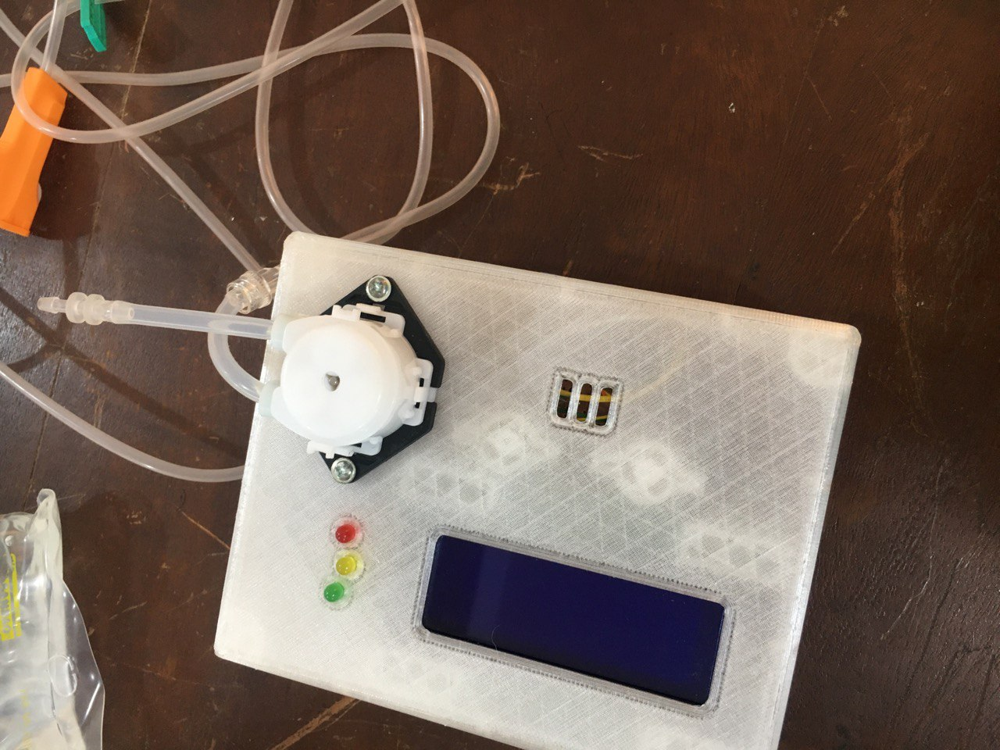
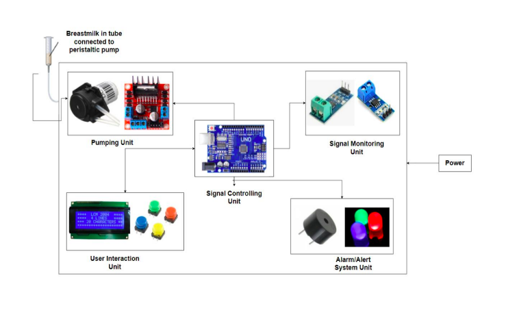

Overview
Premature death due to respiratory distress syndrome and malnutrition is one of the leading causes of mortality in preterm babies. These infants lack the mature neurophysiological function needed to self-coordinate their feeding process. In low- and middle-income countries (LMICs), there is a high dependency on healthcare professionals to manually feed preterm babies, primarily due to the lack of affordable automatic feeding systems. The goal of this project was to design an automated feeding system to deliver breast milk to preterm babies in LMICs, within local technology and design constraints. This solution aims to reduce the burden on healthcare professionals and allow clinicians to accurately deliver the required volume of nutrition at the appropriate flow rate.
The final design allows the clinician to set two parameters: flow rate and volume of breast milk. This information is processed by a microcontroller to accurately administer the nutrition to the infant. The system consists of a liquid crystal display (LCD), a voltage and current sensor, a temperature sensor, three LEDs, a buzzer, a peristaltic pump, and a microcontroller. The automated feeding system is capable of delivering nutrition at flow rates between 5 ml and 15 ml per minute, with a maximum error margin of ±3 ml, and can administer volumes ranging from 20 ml to 60 ml.
Diagrams
Snippets showing design assembly and flow diagram.

Feeding Pump
The figure above shows the physical prototype of the low-cost feeding pump device. It features a peristaltic pump (visible at the top, connected to tubing) for delivering breast milk. The enclosure houses various components, including an LCD screen for displaying system information and user settings. There are also three LED indicators (green, yellow, and red), which serve as visual alerts for different operating states: the red LED indicates power status, the yellow LED signals an error, and the green LED shows when the pumping process is complete.

Flow Diagram
The flow diagram illustrates an automated breast milk pumping system that incorporates multiple low-cost components for efficient operation. The Pumping Unit uses a peristaltic pump to transfer breast milk, controlled by a motor driver. The Signal Monitoring Unit includes sensors to track parameters such as voltage and current readings of peristaltic pump, while the Signal Controlling Unit uses an Arduino Uno/ATmega 328p to process data and manage system functions. Users interact with the system through the User Interaction Unit, which features an LCD display and buttons for adjusting settings. Finally, the Alarm/Alert System Unit provides notifications through LEDs and a buzzer.